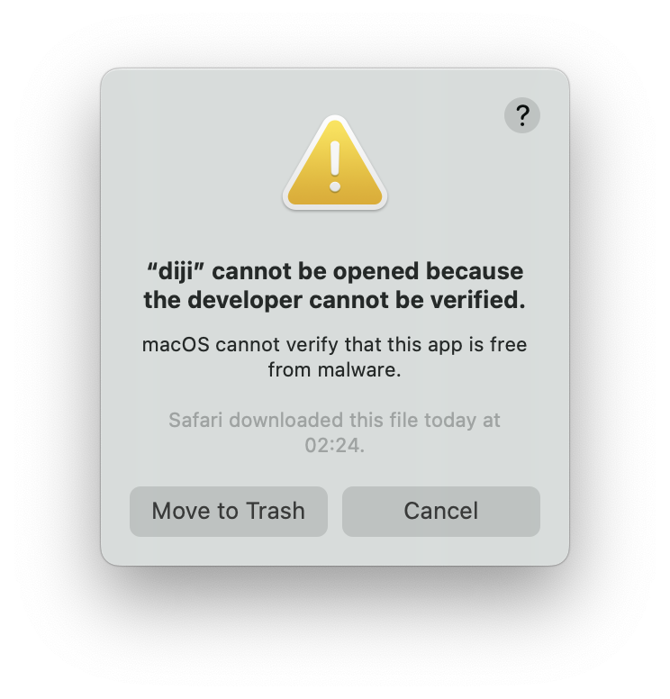

Installation
Last edited: 27 August 2023
Open on GitHub
macOS users: If you can't run diji because of it "not coming from a verified developer" according to Apple, click here for a solution
After downloading diji you have 2 choices. You can either put it in a folder where you're gonna create all of your projects (for example Documents) or add it to $PATH and use it anywhere.
Way 1 (Storing in the projects folder)
Extract the zip you downloaded earlier and open the folder that was extracted from it. Now select both the diji binary and the diji-config folder and copy them to a folder you want to use for creating your projects. Now you can run diji by opening the terminal (or PowerShell on windows if you don't have Windows Terminal installed) in that folder and running it with a command ./diji
Way 2 (Adding to $PATH)
Linux:
(It might not work if you use a different shell instead of bash. In that case you can also try the macOS instructions (replace/User/[user] with /home/[user] in the line you're adding to .zprofile). If that doesn't work either just look up online how to add files to $PATH on your shell.)
Extract the downloaded zip and open the terminal.
Now run this command:
cp -r ./Downloads/diji .localOpen .profile in your favorite editor (in my case neovim):
nvim .profileGo to the end of the file and paste this line (replace [user] with your username):
export PATH=$PATH:/home/[user]/.local/dijiOf course save the file afterwards
Now you can either reboot/log out and back in to save the changes systemwide or if you're busy, run source ~/.profile to apply them in your current terminal session.
After doing this, running diji in your terminal should make diji start.
macOS:
(It might not work if you use a different shell instead of zsh. In that case you can also try the Linux instructions (replace/home/[user] with /User/[user] in the line you're adding to .profile). If that doesn't work either just look up online how to add files to $PATH on your shell.)
Extract the downloaded zip and open the terminal.
Now run this command:
cp -r ./Downloads/diji .localOpen .profile in your favorite editor (in my case neovim):
nvim .zprofileGo to the end of the file and paste this line (replace [user] with your username):
export PATH=$PATH:/Users/[user]/.local/dijiOf course save the file afterwards
Now you can either reboot/log out and back in to save the changes systemwide or if you're busy, run source ~/.zprofile to apply them in your current terminal session.
After doing this, running diji in your terminal should make diji start. (It will quite likely display a dialog about the developer "not being verified". Here's the fix)
Windows:
Extract the downloaded zip and open Windows Terminal or PowerShell. If you're using Windows Terminal, make sure the active tab says PowerShell.
Now run this command (replace [architecture] with your cpu's architecture (it's at the end of the file name of the zip you downloaded)):
Copy-Item "Downloads/diji-1.2-windows-[architecture]/diji" -Destination "AppData" -RecurseOpen Settings, scroll down to the bottom and click "About":
Click "Advanced system settings":
Click "Environment variables...":

Select the "Path" variable and click "Edit...":
Click "New" and paste the following path (replace [user] with your username):
C:\Users\[user]\AppData\dijiNow press "OK"
After doing this, running diji in a new terminal window should make diji start.
macOS "developer not verified" fix
When trying to run diji you might see this macOS dialog which doesn't allow you to actually run it:
It's because Apple keeps being overprotective and generally treating their users like digitally illiterate grandmas. While this dialog might be helpful if you're trying to install an app from a big company and protect you from a version that has been tampered with, in case of small, hobbyst developers all it does is just tries to force them into paying $99/year for their developer program which a lot of people just can't afford.
However there's an easy fix
Open a finder window in the diji folder in your $PATH with this command:
open .local/dijiRight click on the diji binary, hold ⌥ (option) and select the "Open" item in the context menu:
Now a similar dialog has appeared to the one before but not it has an "Open" button. Press it and diji will open in the default terminal app. Close the Terminal window and now running diji using the diji command will work.